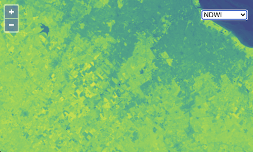

Visualization chooser
In the previous examples, we have seen a true color composite, a false color composite, and an NDVI rendering of the same Sentinel-2 image. It would be nice to allow users to choose from one of these visualizations and more without having to change our code each time. To do this, we'll create a list of available visualizations and add a <select> element to our page to let users choose which to display.
In addition to the true color, false color, and NDVI visualizations, we'll add a new Normalized Difference Water Index (NDWI). This is similar to NDVI except that it can be used to monitor changes in water bodies.
NDWI = (GREEN - NIR) / (GREEN + NIR)
As we've seen, each visualization needs to have an array of sources (these are the URLs for single- or multi-band GeoTIFFs), an optional max value for scaling GeoTIFF values, and an optional style for rendering the layer. In addition, we'll give each visualization a name for displaying to the user.
Edit your main.js to include the visualizations data below:
Now instead of creating our GeoTIFF source and layer once, we need a function to create these when the user chooses a visualization. This function will take a base URL and a visualization and will return a layer. Edit your main.js to remove the source and layer definitions and include this function instead:
Next we can change the map definition in main.js so it doesn't include any layers at all (these will be added when the user selects a visualization):
Now we need a way for users to choose which visualization to show. For this, we'll add a <select> element to the index.html just before the <script> tag:
To get this <select> element to display over the map in the top right corner, add the following block to the <style> tag in your index.html:
With the <select> element in place, we need to populate it with an <option> for each of the visualization names. To do this, add the following to your main.js somwhere below the visualizations array:
import:'visualization-selector'
Finally, we will create a function to update the map with a new layer based on the selected visualization. We'll add this function as a change listener on our <select> element and call it to initalize our application:
Now http://localhost:1234/ should show a visualization chooser.

Nice! Now the user can choose what type of visualization to render. But wouldn't it be nice to be able to change the imagery source too? That's next.